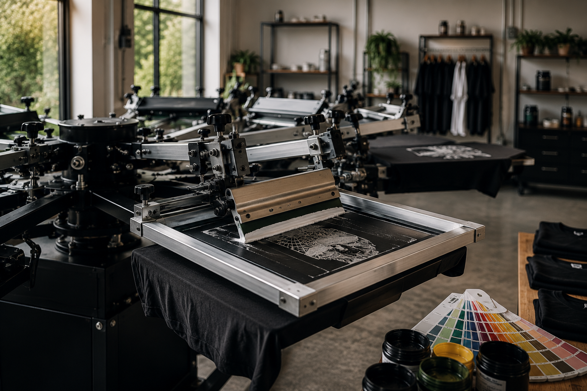
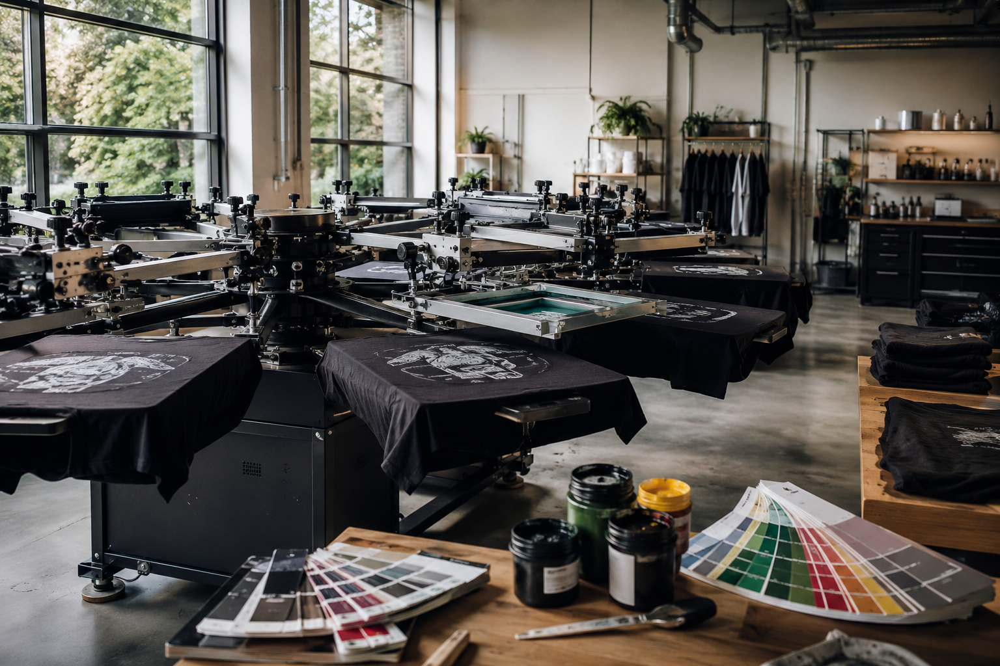
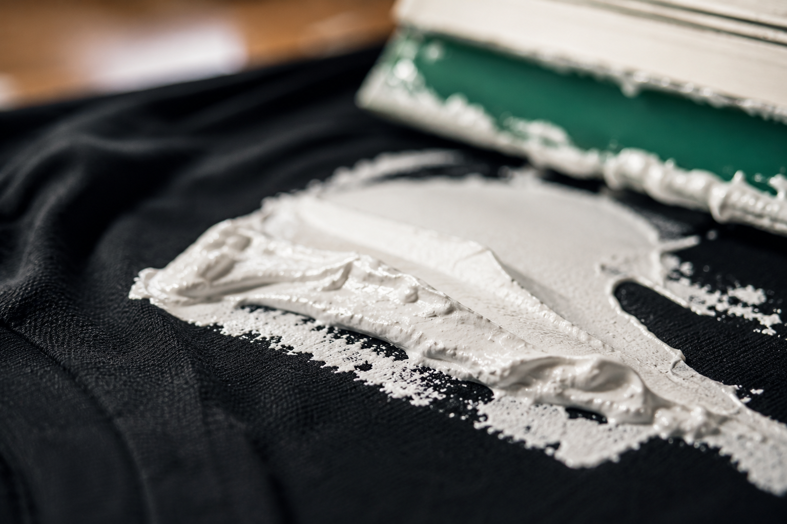
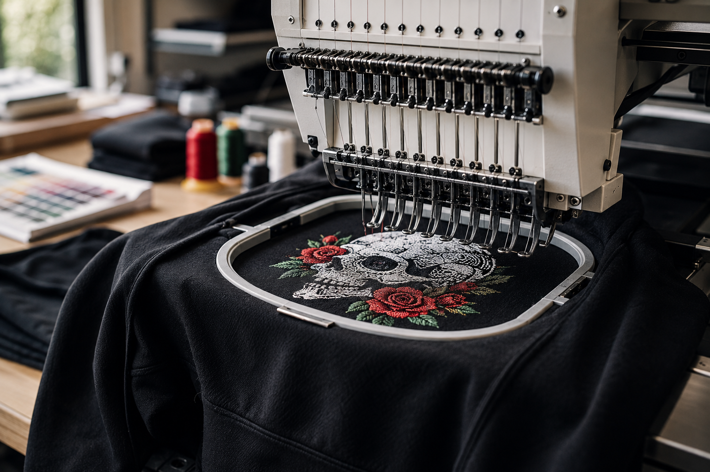
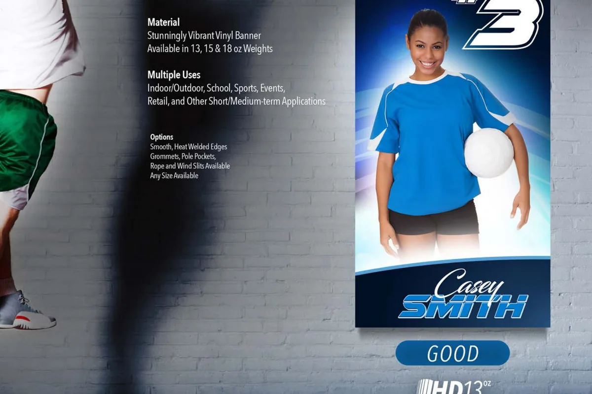
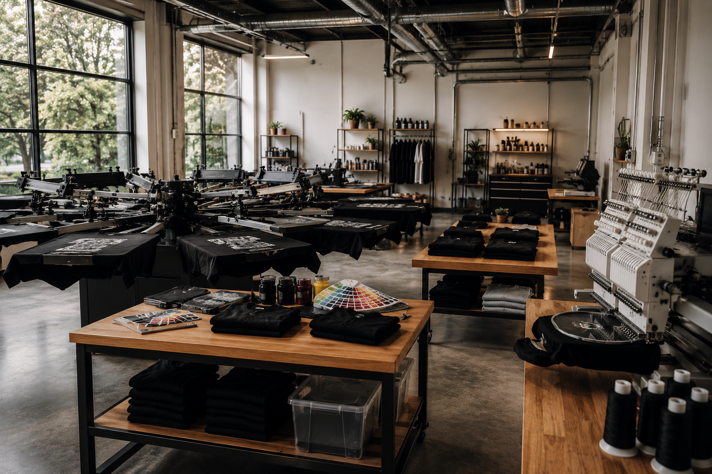

Ink / texture / impactScreen
Screen
printing
Bold, tactile ink for collections, merch drops, teams and larger runs.
View screen printingCustom apparel. Real impact.
Three decoration disciplines, one point of view: make the garment feel considered before anyone even reads the logo.


01 / The disciplines
Different techniques. One commitment to getting every detail right. Find the finish that fits the garment, the art and the moment.

Bold, tactile ink for collections, merch drops, teams and larger runs.
View screen printing
Raised texture and lasting structure for caps, polos, jackets and workwear.
View embroidery
Vivid artwork and flexible runs for detailed graphics, names and numbers.
View DTF printing02 / The MA2K point of view
We work with brands, businesses, teams and communities that have something to say. The garment is part of the message, so we care about the blank, the placement, the color and the finish.

Craft / culture / community03 / Choose your finish
Start with the artwork and the way you want the piece to live. We will help you match it to the method that makes the most sense.
Screen printing gives artwork weight, consistency and a classic hand.
Embroidery brings dimension to everyday uniforms and premium pieces.
DTF is built for full-color detail, personalization and flexible quantities.
04 / Studio references
Look closely. The difference is in the surface, the line and the way the garment carries the design.
05 / Simple by design
We keep the project path clear so selecting a garment, decoration method and artwork direction feels considered from the start.
Screen print, embroidery or DTF. Not sure? Tell us what the piece needs to do.
Choose the garment, quantity, colors, placement and target date.
Upload what you have or ask us to help prepare the artwork.
Review the details and move into production with confidence.
Our visual language draws from the rhythm, warmth and expressive geometry of West African textile traditions while our work belongs to the diverse communities building something here and now.
Ready when you are
Tell us what you are building. We will help you choose the method, garment and next step.